The cytoskeleton
A cell is not a bag of soup. Three kinds of protein filaments give it a shape, move things inside it and let it crawl. This lecture opens the cytoskeleton block with the overview and then the first system: actin filaments.
After this lecture you can:
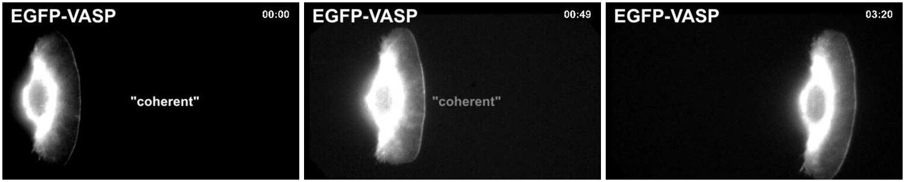
A fish keratocyte crawling on glass (time in min:s; the cell is about 40 µm wide). Its front edge is labelled with a fluorescent actin-binding protein (EGFP-VASP).
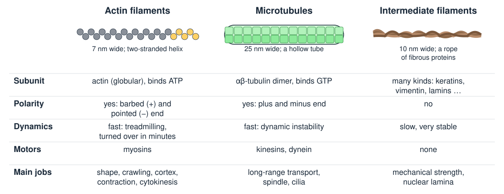
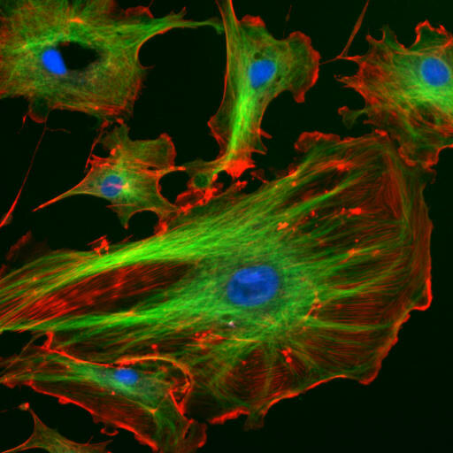
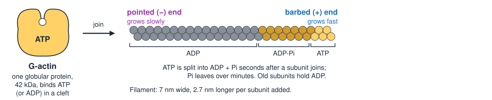
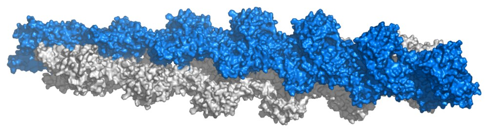
Atomic model of an actin filament, 13 subunits; one strand blue, the other white.
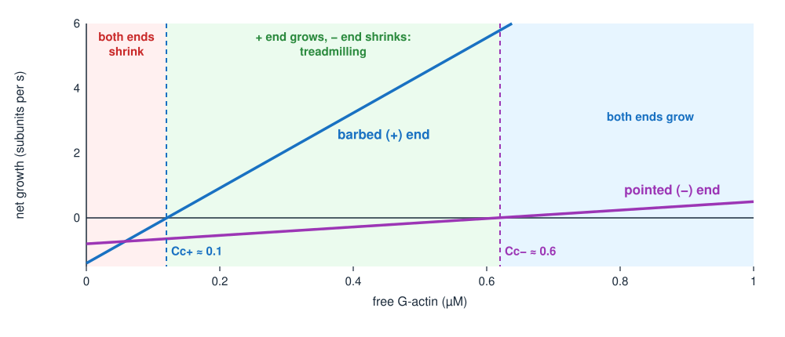
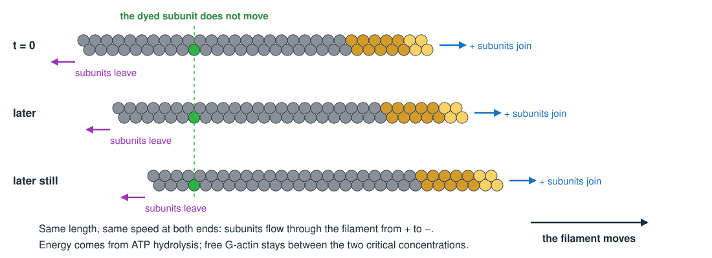
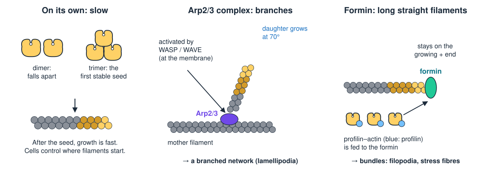
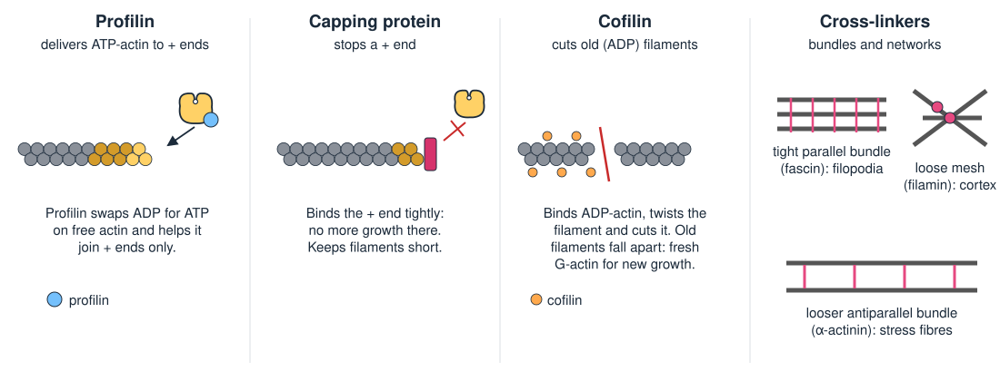
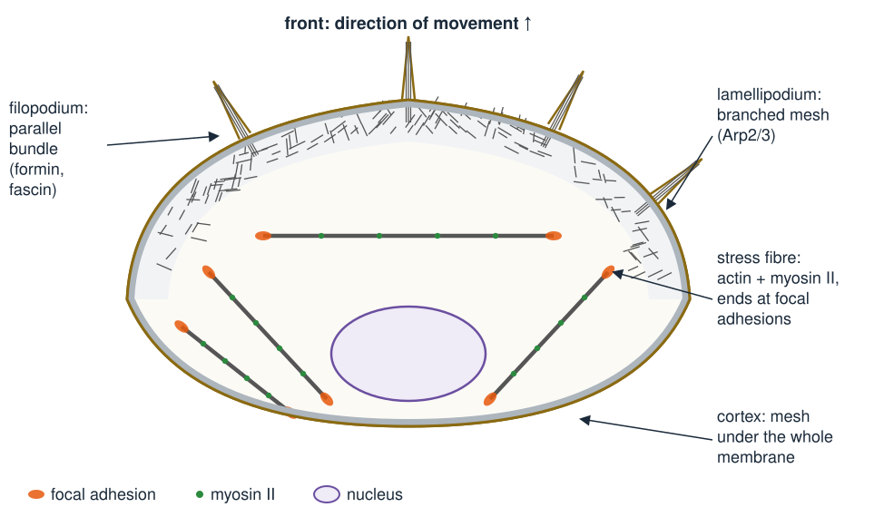
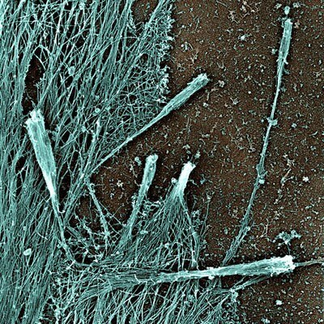
Electron micrograph of a cell edge: the lamellipodium’s dense mesh (left) and filopodia filled with bundles of parallel filaments.
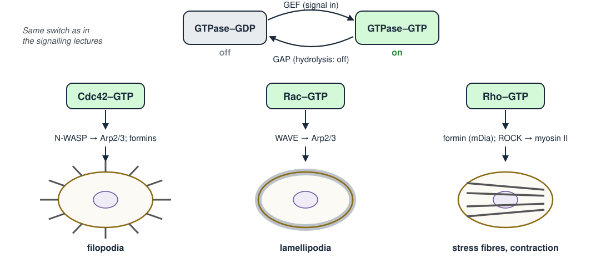
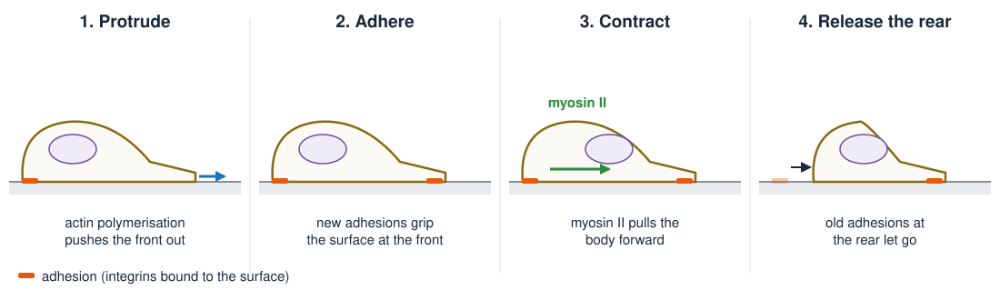
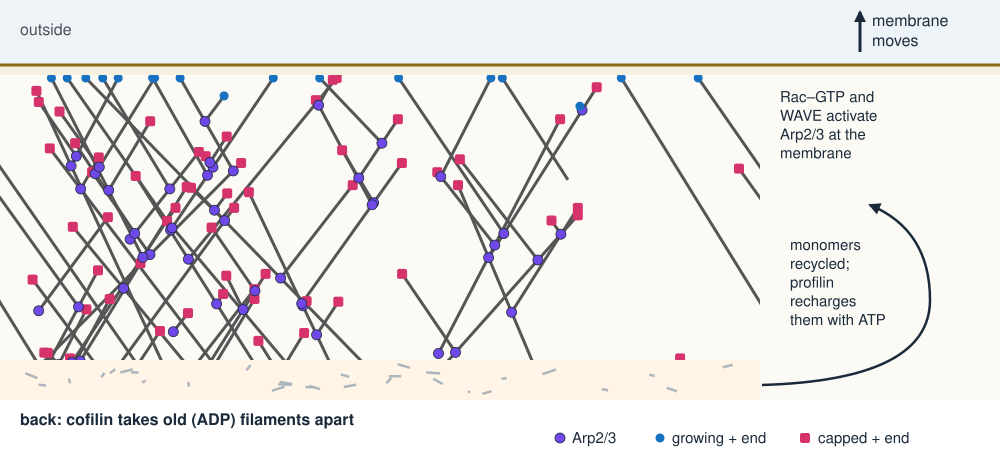
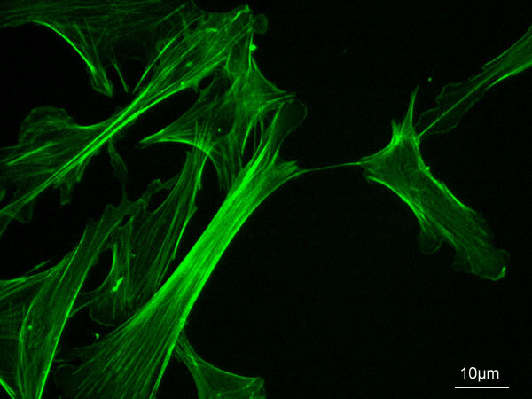
Mouse fibroblasts stained with fluorescent phalloidin: stress fibres and edges. Scale bar 10 µm.
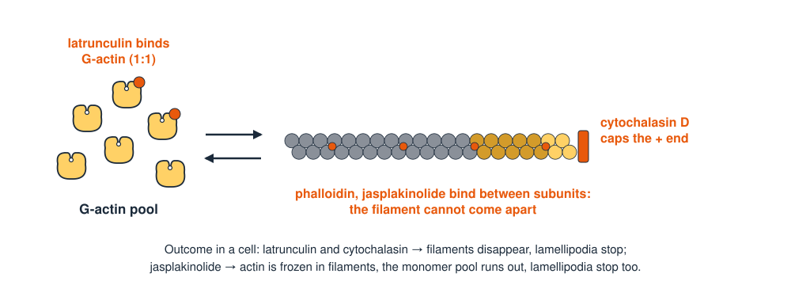
| Drug (source) | Target | Effect on filaments |
|---|---|---|
| Latrunculin (sponge) | binds G-actin | no new growth; filaments fall apart |
| Cytochalasin D (fungus) | caps + ends | no growth at + ends |
| Jasplakinolide (sponge), phalloidin | binds F-actin | filaments cannot come apart |
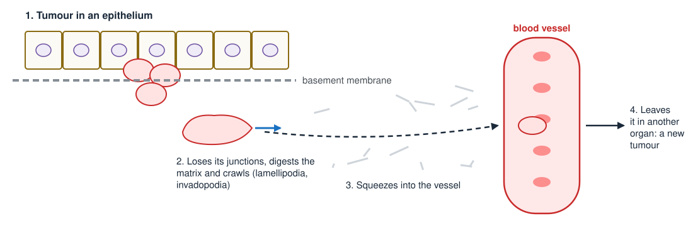
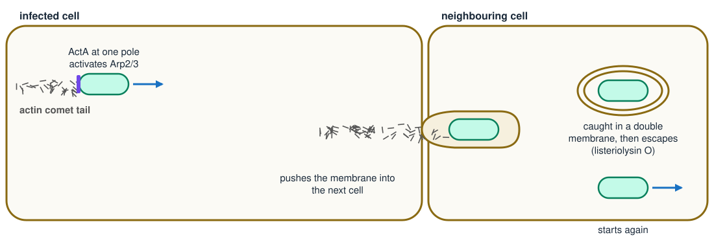
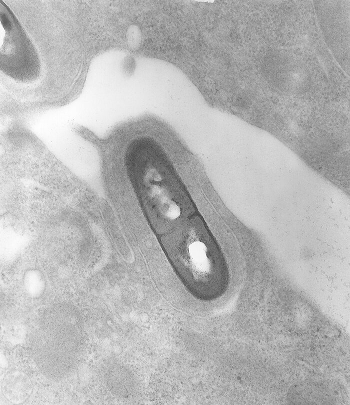
Listeria monocytogenes in infected tissue (electron micrograph).
Read more (optional): Alberts et al., Molecular Biology of the Cell, 7th ed., ch. 16.